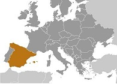
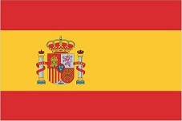

Spain's powerful world empire of the 16th and 17th centuries ultimately yielded command of the seas to England. Subsequent failure to embrace the mercantile and industrial revolutions caused the country to fall behind Britain, France, and Germany in economic and political power.
Spain remained neutral in World War I and II, but suffered through a devastating civil war (-) A peaceful transition to democracy following the death of dictator Francisco FRANCO in , and rapid economic modernization (Spain joined the EU in ) gave Spain a dynamic and rapidly growing economy, and made it a global champion of freedom and human rights.
More recently, Spain has emerged from a severe economic recession that began in mid-, posting four straight years of GDP growth above the EU average. Unemployment has fallen, but remains high, especially among youth. Spain is the Eurozone's fourth largest economy. The country has faced increased domestic turmoil in recent years due to the independence movement in its restive Catalonia region.
Geography
Location

The location of Spain is Southwestern Europe, bordering the Mediterranean Sea, North Atlantic Ocean, Bay of Biscay, and Pyrenees Mountains; southwest of France
More images of Spain and it's geography can be found on the CIA World Factbook.
Government
Country Name
Conventional long form:
Kingdom of Spain
Conventional short form:
Spain
Cocal long form:
Reino de Espana
Cocal short form:
Espana
Etymology:
Derivation of the name "Espana" is uncertain, but may come from the Phoenician term "span," related to the word "spy," meaning "to forge metals," so, "i-spn-ya" would mean "place where metals are forged"; the ancient Phoenicians long exploited the Iberian Peninsula for its mineral wealth
Flag

Three horizontal bands of red (top), yellow (double width), and red with the national coat of arms on the hoist side of the yellow band; the coat of arms is quartered to display the emblems of the traditional kingdoms of Spain (clockwise from upper left, Castile, Leon, Navarre, and Aragon) while Granada is represented by the stylized pomegranate at the bottom of the shield; the arms are framed by two columns representing the Pillars of Hercules, which are the two promontories (Gibraltar and Ceuta) on either side of the eastern end of the Strait of Gibraltar; the red scroll across the two columns bears the imperial motto of “Plus Ultra” (further beyond) referring to Spanish lands beyond Europe; the triband arrangement with the center stripe twice the width of the outer dates to the 18th century
Capital
Name:
Madrid
Time Difference:
UTC+1 (6 hours ahead of Washington, DC, during Standard Time)
Daylight Savings Time:
+1hr, begins last Sunday in March; ends last Sunday in October
Time Zone Note:
Spain has two time zones, including the Canary Islands (UTC 0)
Independence
Spain gain independence in ; the Iberian peninsula was characterized by a variety of independent kingdoms prior to the Muslim occupation that began in the early 8th century A.D. and lasted nearly seven centuries; the small Christian redoubts of the north began the reconquest almost immediately, culminating in the seizure of Granada in ; this event completed the unification of several kingdoms and is traditionally considered the forging of present-day Spain